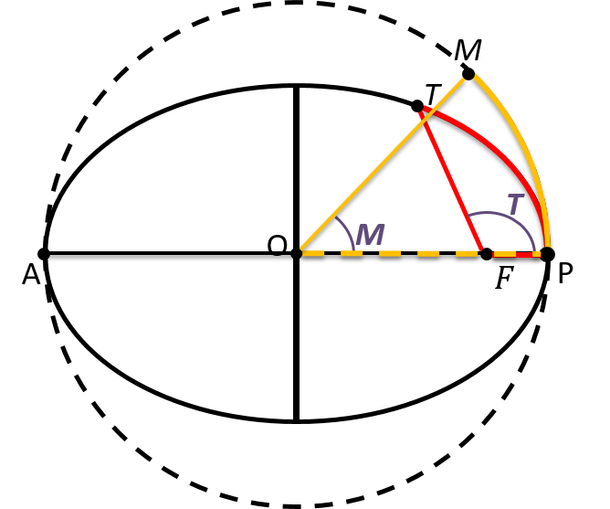
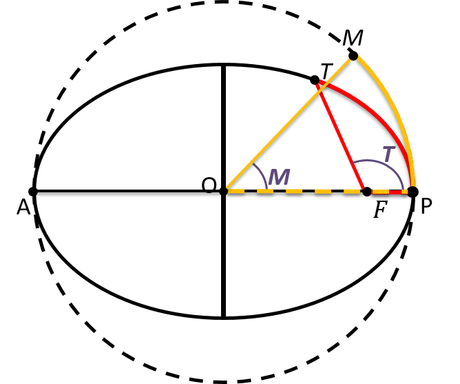

График: Истинная аномалия от средней аномалии
синий - уравнение Кеплера
зеленый - равенство долей площадей
График: Разница долей площадей T-M в процентах от средней аномалии
синий - уравнение Кеплера
зеленый - равенство долей площадей
График: Количество итераций от средней аномалии
синий - уравнение Кеплера
зеленый - равенство долей площадей
 
